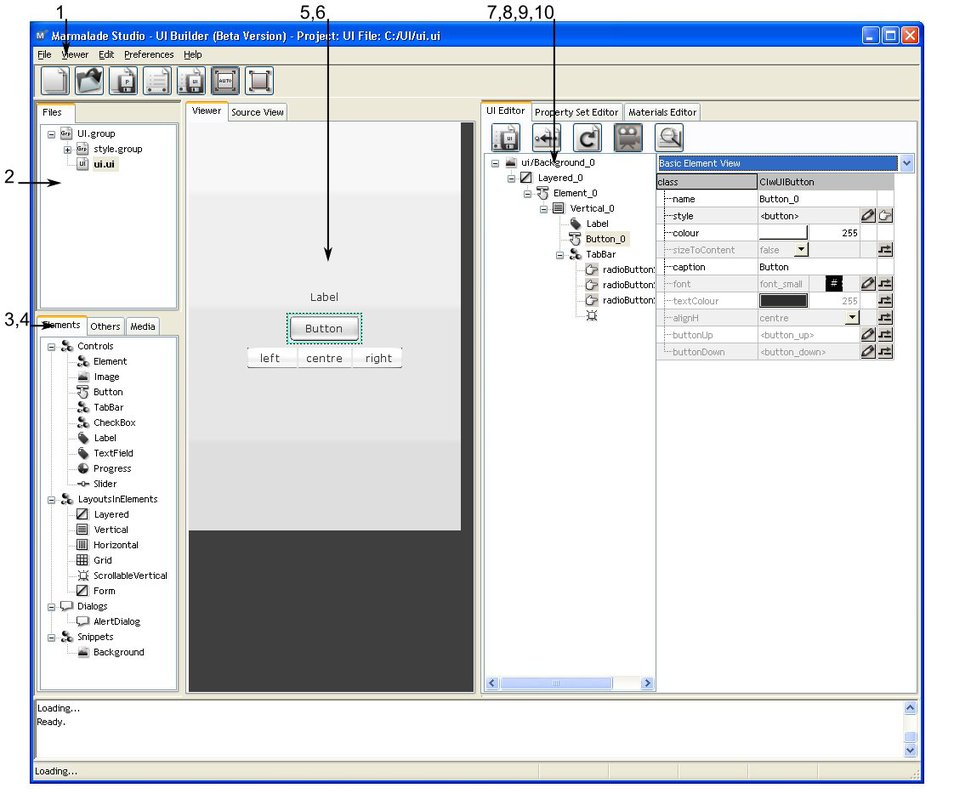

Introduction to the UI Builder
The Marmalade Studio UI Builder is a program that creates user interface files that are saved as .UI types to be used within Marmalade.
Opening the UI Builder
The UI Builder can be opened from the start menu group for Marmalade, in the folder "Tools". It can also be opened from the "Marmalade Studio tools" tab of the Launchpad Application.
The Interface
There are four panels within the main window of the UI Builder Interface. There is also a File menu, which allows the user to create, load and save projects, and a Help item, which loads the UI Builder section of the Tools Reference Guide.

-
Menus - There are four menus on the menu bar, and a context menu for right-click events
-
Files - This is the hierarchy of files within the root group
-
Palette - A collection of Preset Elements, Layouts and Focus Handlers
-
Media - This is a collection of assets
-
Viewer - This displays UI file as it will appear on the device
-
Source View - This displays the source of the file
-
Element Editor - This is the main property editor for elements
-
Layout Editor - This displays the layout of the current file
-
Style Editor - This displays the styles and property sets
-
Material Editor - This displays the materials that are used in the group